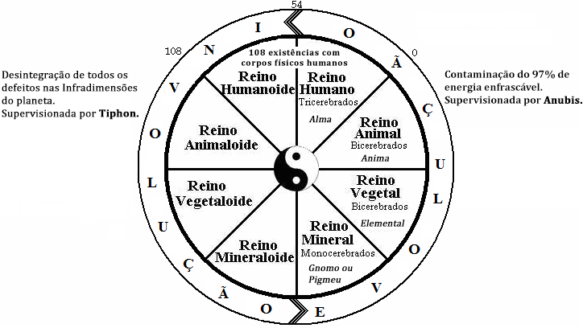
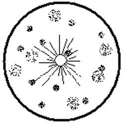
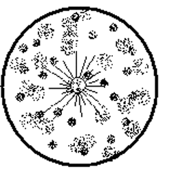
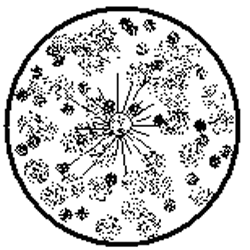
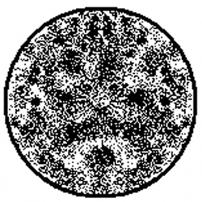

Conferência nº 8
EVOLUÇÃO, INVOLUÇÃO E REVOLUÇÃO
Primeiro devemos compreender que a Lei de Evolução é completamente mecânica. O segundo que devemos observar é que se existe a Lei de Evolução também existe a Lei de Involução, já que é sua irmã gêmea por oposição. A esperança mecânica da humanidade na evolução é um fracasso. Se vemos tudo o que temos "evoluído" nos últimos anos, nos daremos conta disso. Quando tínhamos visto tanta degeneração, perversidade, guerras, prostituição, homossexualismo, lesbianismo, crueldade, etc., etc.?
Devemos deixar de sonhar com uma evolução mecânica e dar-nos conta que só através da Revolução Consciente é possível a regeneração humana. Compreender o erro em que nos encontramos quando nos apoiamos em conceitos como a teoria de Darwin.
O objetivo desta conferência é que consigamos ver com clareza para que viemos ao planeta e como conseguir este objetivo.
Como evoluímos através dos quatro reinos da natureza? Todas as chispas saem do Sagrado Sol Absoluto em busca de sua Maestria ou Auto-Realização, através de um dos Sete Raios da Criação e descem à Roda do Samsara para fazer o Curso. Umas poucas conseguem se Auto-Realizar, a maioria fracassa. Todas tem livre-arbítrio e não são pressionadas a lograr o triunfo.
Se fixa como tempo para a oportunidade 300.000 anos esotéricos, representados na formação de três mil (3.000) almas; uma (1) alma por cada ciclo e cento e oito (108) existências humanas por cada uma das almas. O que equivale a trezentos e vinte e quatro mil (324.000) corpos físicos humanos.
Se tem três alternativas na roda:
- Triunfo: lograr a Auto-Realização.
- Fracasso: esgotar as existências e regressar ao Absoluto com o 3%.
- Renunciar a Roda e regressar com o 3% de Consciência.
Vejamos a Roda do Samsara:
Pela direita ascende a Evolução dirigida pelo Anúbis
Pela esquerda descende a Involução dirigida por Tifon.
Na Evolução encontramos os quatro reinos da natureza e na Involução os mesmos quatro reinos em estado involutivo.
- - Reino Mineral
- - Reino Vegetal
- - Reino Animal
- - Reino Humano
- - Reino Mineralóide
- - Reino Vegetalóide
- - Reino Animalóide
- - Reino Humanóide
Estudemos a Evolução:
No Reino Mineral a chispa é conectada a um corpo físico de mineral (pedra, metal, grão de areia, etc.).
Sua alma se denomina Gnomo ou Pigmeu e tem a chispa original com seu 3% de Consciência. Não tem defeitos psicológicos, porém inicia sua criação. Se lhe atribui o primeiro cérebro que é o Emocional.
Nestas condições durará milhares e ate milhões de anos formando seus primeiros defeitos. Os primeiros defeitos que forma são os de desobediência aos Gurus Devas da natureza. Continua com os de antipatia, etc., etc.
O único dever que tem a chispa no reino Mineral é assistir ao colégio onde lhes estão ensinando as diferentes coisas do reino.
Quando o Anúbis vê que a chispa já tem suficientes defeitos criados a traslada para o Reino Vegetal.
No Reino Vegetal a chispa é conectada a um vegetal de acordo com o Raio da Criação ao qual pertence. Sua alma se denomina Elemental e sua Consciência continua com o 3% tal como chegou, porém é trasladada com os defeitos que criou.
Se lhe atribui o segundo Cérebro que é o Motor-Instintivo-Sexual. Apesar de que está plantada em um lugar, inicia o desenvolvimento do Cérebro Instintivo. Este Cérebro lhe permite sentir dor, prazer e temor.
Fica assim como ser Bicerebrado. Cérebro Emocional e Cérebro Motor-Instintivo-Sexual. Tem que começar a lutar pelo seu alimento, pela luz e contra as plantas parasitas, etc. Nessa luta cria novos defeitos psicológicos, visto que já sente dor e tem que apreender muito da natureza, para tornar-se forte.
Quando o Guru Deva vê que se tem criado suficientes defeitos a desconecta do reino Vegetal e a conecta ao reino Animal.
No Reino Animal a chispa mantém seu 3% de Consciência, mantém os dois cérebros do reino Vegetal, com a diferença de que não se encontra plantada e pode mover-se, buscar seu próprio alimento, aprender a defender se de outros animais, etc., etc.
Aqui desenvolverá todos seus novos instintos animais, a fornicação, violência, temor, agilidade, aprende a subsistir em um meio agreste, fato que a leva a criar novos defeitos.
A Alma no reino animal se denomina Anima.
Quando o guru Deva vê que tem suficientes defeitos a traslada ao Reino Humano.
No Reino Humano lhe darão um novo cérebro que é o Intelectual e receberá o nome de Alma. Se lhe atribui 108 existências com corpo físico humano. Conectarão o cordão de prata ao primeiro corpo físico humano.
A partir deste momento descerá nove graus, ou melhor dito, se degenerará em ciclos de doze (12) existências até descer os nove (9) graus.
As primeiras existências se darão em uma tribo, em um lugar afastado da civilização. Ao completar a existência número 54 a Evolução haverá terminado e o humano, por tanto ego que se tem formado, iniciará a Involução apesar de que ainda tem direito a outras cinquenta e quatro (54) existências como Humanoides. O instinto põe o intelecto a seu serviço e a Alma ou Psique se enegrece em forma muito mais acelerada.
Se não aproveitamos a Alma a perderemos, pois esgotadas as 108 existências ingressaremos na Involução, para que a natureza desintegre até o último dos agregados psicológicos e consigamos a Morte Segunda.
Estudemos a Involução:
Uma vez que se tem esgotado as 108 existências no reino Humano a chispa é conectada a um animal involutivo, ao mesmo tempo em que sua Essência contaminada penetra aos Nove Círculos Dantescos de onde não sairá ate que a natureza termine de desintegrar todos os defeitos.
Aqui receberá numerosos corpos de animais e mais tarde será conectada a numerosos corpos de plantas involutivas e por último chegará ao Reino Mineral Involutivo (minerais em decomposição).
Estes passos devem dar-se já que o Sol não pode ter chispas ociosas. Todas devem servir a Lei do Trogo.
O QUE É A REVOLUÇÃO?
A Revolução da Consciência é um trabalho que cada um de nós deve fazer para conseguir sua própria mudança.
Esta mudança se faz através dos Três Fatores da Revolução da Consciência:
- Morte Psicológica
- Nascimento Espiritual
- Sacrifício pela Humanidade
Morte psicológica:
- Descobrir os defeitos psicológicos mediante a Auto-observação
- Julgar os defeitos até compreendê-los
- Suplicar a Mãe Divina que elimine os defeitos compreendidos
Com a Morte Psicológica se libera a Consciência presa nos defeitos.
Nascimento Espiritual:
O sábio uso da Energia Criadora Sexual para criar os corpos Existenciais do Ser.
União sexual de homem e mulher (falo na yoni) sem derramar a Energia Criadora Sexual.
Com o nascimento Espiritual se fixa a Consciência liberada na medula espinhal.
Sacrifício pela Humanidade:
Entregar o Conhecimento para a humanidade desinteressadamente para que cada pessoa que o receba possa fazer sua própria Obra.
Com o Sacrifício pela Humanidade se desperta o Amor.
Desta forma nos liberamos da Roda do Samsara; dos processos de Evolução e Involução aos que temos estado amarrados faz muitíssimo tempo. Assim conseguiremos a Auto-Realização do Ser.